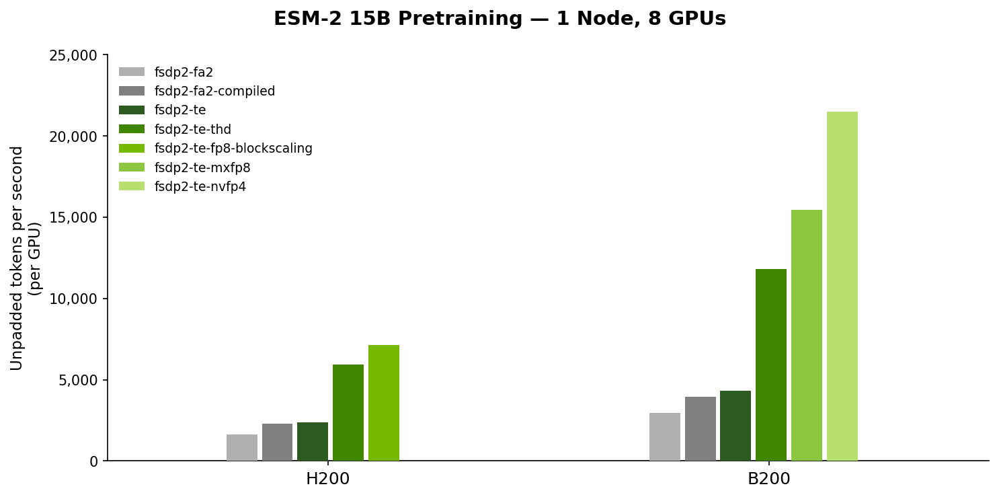
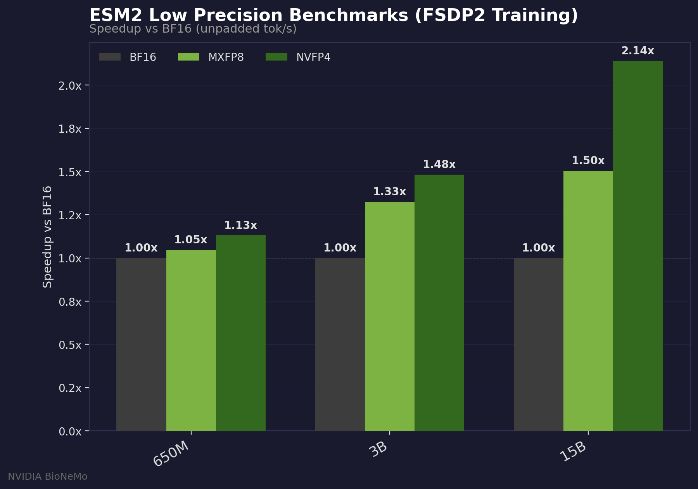
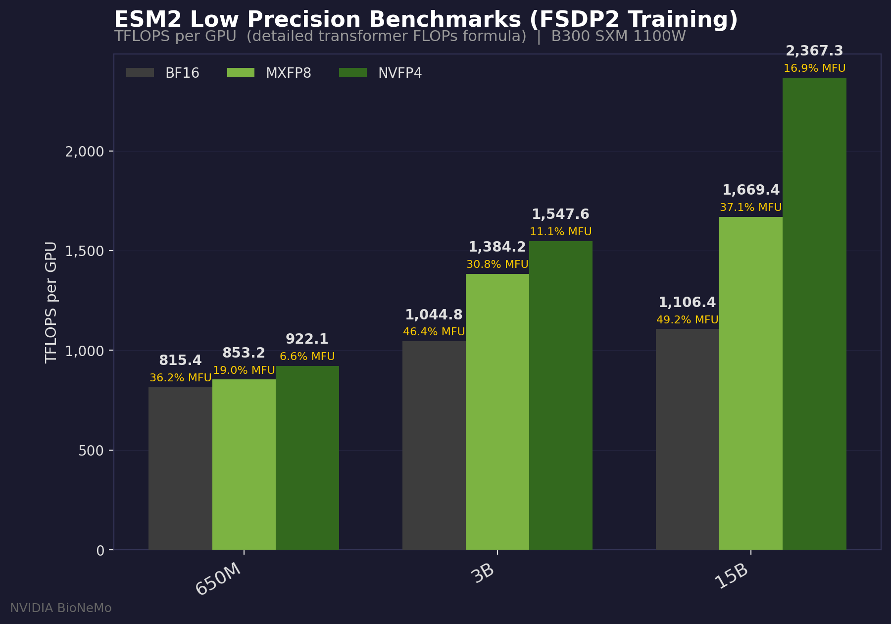

TransformerEngine-accelerated ESM-2 training with native PyTorch training loop
This folder demonstrates how to train TE-accelerated ESM-2 with a native PyTorch training loop, including sequence packing, FP8/MXFP8/NVFP4 precision with layer-wise control, using fully sharded data parallel (FSDP) for distributed training.
How to use this recipe
This folder contains an independent, minimal training example. It does not depend on any other code in the top-level bionemo-framework repository. You can download a zipped directory of this folder alone by clicking here.
How to deploy this recipe on cloud providers
🚧 Under development
Supported Models and Training Features
| Model | BF16 | FP8[1] | MXFP8[2] | NVFP4[3] | THD Input Format | Context Parallelism |
|---|---|---|---|---|---|---|
| ESM-2 | ✅ | ✅ | ✅ | ✅ | ✅ | ✅ |
| AMPLIFY | ✅ | ❌ | ❌ | ❌ | 🚧 | 🚧 |
✅: Supported
🚧: Under development
❌: Not supported
[1]: Requires compute capability 9.0 and above (Hopper+)
[2]: Requires compute capability 10.0 and 10.3 (Blackwell), 12.0 support pending
[3]: Requires compute capability 10.0 and above (Blackwell+)
Installing Dependencies
The easiest way to get started with this recipe is to use the provided Dockerfile, which uses the latest NVIDIA PyTorch base image to provide optimized versions of PyTorch and TransformerEngine. To build the container, run:
docker build -t esm2_native_te .
To run the container, run:
docker run -it --gpus all --network host --ipc=host --rm -v ${PWD}:/workspace/bionemo esm2_native_te /bin/bash
Alternatively, the dependencies can be installed manually in an environment with CUDA support. Refer to Dockerfile.cuda for the process of installing dependencies in a fresh python environment (for example, CUDA 13.0):
uv venv --python 3.12 --seed /workspace/.venv
source /workspace/.venv/bin/activate
uv pip install torch==2.9.0 --index-url https://download.pytorch.org/whl/cu130
uv pip install wheel packaging psutil
pip install --no-build-isolation "flash-attn>=2.1.1,<=2.8.1"
pip install --no-build-isolation transformer-engine[pytorch]==2.9.0
uv pip install -r /requirements.txt
To build and run the CUDA base container, run:
docker build -t esm2_native_te_cuda -f Dockerfile.cuda .
docker run -it --gpus all --network host --ipc=host --rm -v ${PWD}:/workspace/bionemo esm2_native_te_cuda /bin/bash -c "pytest -v ."
Performance Benchmarks

ESM-2 15B single-node pretraining benchmarks were conducted on 1 node (8 GPUs) across H200 (140 GB) and B200 (192 GB) hardware. We evaluate a progression of optimization strategies: PyTorch Flash Attention 2 (with and without torch.compile), Transformer Engine with BSHD and THD (sequence packing) layouts, and low-precision training with FP8 Block Scaling (H200), MXFP8, and NVFP4 (B200). On H200, moving from baseline FA2 to TE with FP8 Block Scaling yields a 4.4x improvement in unpadded tokens/s/GPU (1,630 → 7,119). On B200, the full optimization stack from FA2 to NVFP4 delivers a 7.3x speedup (2,958 → 21,476), with NVFP4 reaching over 2,000 TFLOPS per GPU. Sequence packing (THD) alone accounts for a 2.5–2.7x gain over padded BSHD on both platforms, while Blackwell-native low-precision formats (MXFP8, NVFP4) unlock an additional 1.3–1.8x on top of that. For more information on how low precision scales with model parameters see the next section.Low precision performance benchmarks


In the above plots, we can see both the speedup over BF16 training as well as TFLOPS per gpu for the various GPU SKUs. Moreover, as we increase the scale of our models, the benefits of low precision training are apparent. This is because at smaller parameter models (such as 650M, 3B) etc, the cost to quantize activations from high precision to low precision outweights the benefits of performing matrix multiplication with low precision. However, as our models scale up in parameter count, the fixed quantization cost is lower than our GEMM operational savings.Note: these plots were using our fsdp2 script.
Convergence results for low precision training
MXFP8
 In the above plot, for our ESM2-15B model that was trained with FSDP2 using 80 B300 GPUs nodes for 10 hours. We can clearly see that
our MXFP8 run and our BF16 baseline run have the same results. A perfect match in convergence.
In the above plot, for our ESM2-15B model that was trained with FSDP2 using 80 B300 GPUs nodes for 10 hours. We can clearly see that
our MXFP8 run and our BF16 baseline run have the same results. A perfect match in convergence.
NVFP4
 In the above plot, for our ESM2-15B model, we show several lines. Each experiment shows a unique configuration using a custom
amount of
In the above plot, for our ESM2-15B model, we show several lines. Each experiment shows a unique configuration using a custom
amount of fp4_layers per run (more info on how to enable this below). Moreover, the experiments can be read as
esm2-15b-b300-mxfp8-fp4_layer_start-fp4_layer_end-N-10-mbs-26-b300 which denotes at which point we start and end the fp4 layers.
We see that as we add more and more layers, our E2E training results get worse. This is a tradeoff between performance and accuracy. If we look at the performance chart above, we have increased performance dramatically, but our accuracy suffers. It's important to note that in all NVFP4 experiments we are also utilizing stochastic rounding and random hadamard transformations.
For more information regarding NVFP4 training please see paper and here
Distributed Training
This recipe supports distributed training using DDP, FSDP2, and Megatron-FSDP, shown in three separate training entrypoints:
- Distributed Data Parallel (DDP), shown in
train_ddp.py - Fully Sharded Data Parallel 2 (FSDP2), shown in
train_fsdp2.py - Megatron-FSDP (mFSDP), shown in
train_mfsdp.py
Commands to Launch Training
To run single-process training on one GPU, run:
python train_ddp.py # or train_fsdp2.py / train_mfsdp.py
To run multi-process training locally on 2+ GPUs, run:
torchrun --nproc_per_node=2 train_fsdp2.py # or train_mfsdp.py / train_ddp.py
Multi-Node training is supported with all three strategies, refer to slurm.sh for an example SLURM script.
Quantized Training (FP8 / MXFP8 / NVFP4)
To run training with FP8, enable it by overriding the fp8_config.enabled=true configuration parameter. Additional FP8
configuration parameters, including switching to MXFP8BlockScaling, can be set using the hydra configuration.
python train_fsdp2.py --config-name L0_sanity fp8_config.enabled=true
Similarly, to train with NVFP4 quantization:
python train_fsdp2.py --config-name L0_sanity fp4_config.enabled=true
Note: This feature is available for the train_ddp and the train_fsdp2 scripts. It is not yet available for
train_mfsdp. NVFP4 stats logging is not yet supported and will be enabled in a future TransformerEngine release;
FP8/MXFP8 stats logging works today.
Additional recipe parameters (e.g., switching to MXFP8BlockScaling) can be set via the hydra configuration.
Layer-Wise Precision
You can control which transformer layers use FP8 or FP4 by specifying 1-indexed layer numbers via fp8_layers and
fp4_layers. Layers not assigned to either format will run in BF16.
For example, to run layers 1-3 in FP8, layers 4-6 in FP4, and the rest in BF16 on a model with more than 6 layers:
python train_fsdp2.py --config-name L0_sanity \
fp8_config.enabled=true \
fp4_config.enabled=true \
'fp8_layers=[1,2,3]' \
'fp4_layers=[4,5,6]'
When both fp8_config and fp4_config are enabled but only one layer list is provided, the other format automatically
claims the remaining layers. For example, if fp8_layers=[1,2,3] is set and fp4_config.enabled=true with no
fp4_layers, then layers 4 through N will default to FP4.
Quantized Model Initialization
When training with FP8 or FP4, you can initialize model weights directly in the target quantized format by setting
config_kwargs.use_quantized_model_init=true. This tells TransformerEngine to create weights inside a
te.quantized_model_init context, avoiding a separate quantization step after initialization.
python train_fsdp2.py --config-name L0_sanity \
fp8_config.enabled=true \
+config_kwargs.use_quantized_model_init=true
This also works with NVFP4:
python train_fsdp2.py --config-name L0_sanity \
fp4_config.enabled=true \
+config_kwargs.use_quantized_model_init=true
Quantization Stats Debugging
We provide a mechanism to log tensor statistics (activations, weights, gradients) for quantized layers during training. When layer-wise precision is used, the stats config is automatically updated so that only the relevant layers are tracked.
To enable stats logging:
python train_fsdp2.py \
quant_stats_config.enabled=true \
quant_stats_config.quant_log_dir=./logs/quant_stats \
quant_stats_config.quant_stats_file=./fp8_debugging_stats.yaml \
fp8_config.enabled=true
Note: This feature is available for the train_ddp and the train_fsdp2 scripts. It is not yet available for
train_mfsdp. NVFP4 stats logging is not yet supported and will be enabled in a future TransformerEngine release;
FP8/MXFP8 stats logging works today.
The config file structure fp8_debugging_stats.yaml is explained in the NVIDIA Transformer Engine config file documentation in more detail.
Stats collection has a performance cost dependent on the freq parameter in the config file. freq=1 collects stats
on every step which in our experiments caused a ~29% decrease in throughput (executed on a single RTX 5090). We
recommend using freq>=10 to reduce this performance hit.
Sequence Packing (THD input format)
Sequence packing is handled using a padding-free collator (in collator.py) that provides input arguments, such as
cu_seq_lens_q), needed for padding-free attention. To enable sequence packing, set use_sequence_packing=true
in the hydra configuration.
python train_fsdp2.py --config-name L0_sanity use_sequence_packing=true
FP8 and Sequence Packing
To combine FP8 training with sequence packing, the number of unpadded input tokens must be a multiple of 16. The data collator will automatically pad packed sequences to the maximum number of tokens per batch.
python train_fsdp2.py --config-name L0_sanity \
fp8_config.enabled=true \
use_sequence_packing=true
Context Parallelism
We provide a training script train_ddp_cp and a sample config L0_sanity_cp that uses context parallelism.
In the config, the argument --cp_size allows the user to set the size of the context parallel distributed group. When paired with Distributed Data Parallelism (DDP), the number of context parallel groups will be determined by world_size//cp_size.
Thus, if a user has 8 processes and sets cp_size=2 they will have 2 CP groups and 4 DDP groups. During dataloading we make no assumptions about the data pipeline being deterministic or not. DDP groups will provide unique data while CP groups will contain replicates of that data.
For example, if we have 2 DDP groups and 2 CP groups. Each DDP group will have a unique dataloader DP0 for DDP group 0
and DP1 for DDP group 1. CP works by running something called ring attention, which expects tokens to live on each device in a particular layout. For this CP implementation we use something called Dual Chunk Swapping. If DP0 outputs sequence 1 2 3 4 5 6 7 8 and DP1 outputs 9 10 11 12 13 14 15 16 then when we run through the CPAwareDataloader defined in datasets, the dataloader will create CP shards from that DP group as follows:
| DP0 | DP1 |
CP0 | 1,2,7,8 | 9, 10, 15, 16 |
CP1 | 3,4,5,6 | 11, 12, 13, 14|
You may notice these shards and wonder why they are the way they are. The reason is that CP groups are sharded using slices. The full input sequence (such as 1 2 3 4 5 6 7) is sliced into 2 * cp_size groups. Then CP0 takes the first and last slice, while CP1 takes the middle slices, of each sequence.
In this example, we only show one sequence but its important to note that slicing takes place on every sequence, so if a second sequence is also available, that will be sliced in the same manner. CP0 will take the first and last slice of every sequence, while CP1 will take the middle slices of each sequence.
Comparing Against the HF Transformers Reference Implementation
To launch training with the ESM-2 model as implemented in HF Transformers, pass a facebook/esm2 checkpoint as the
model tag:
python train_fsdp2.py --config-name L0_sanity model_tag=facebook/esm2_t6_8M_UR50D
Downloading Pre-Training Data For Offline Training
An example pre-training dataset for ESM-2 is available in the
nvidia/esm2_uniref_pretraining_data Hugging
Face dataset. This dataset can be streamed from the Hugging Face Hub by using the following.
>>> from datasets import load_dataset
>>> dataset = load_dataset('nvidia/esm2_uniref_pretraining_data', split='train', streaming=True)
>>> print(next(iter(dataset)))
{'sequence': 'MSPRRTGGARPPGPCTPCGPRPRCPSRRSAAARPAPSAAPARRARPGRRPGCRPGTDCPGTARRPGGGP...',
'ur50_id': 'UniRef50_A0A081XN86',
'ur90_id': 'UniRef90_UPI002FBE17D9'}
For large-scale training, the dataset should be downloaded locally with the huggingface
CLI, with appropriate values set for
HF_HOME and HF_TOKEN environment variables. Use uv tool install huggingface_hub to install the CLI if not already
installed.
export HF_TOKEN=<your_huggingface_token>
hf download nvidia/esm2_uniref_pretraining_data --repo-type dataset --local-dir /path/to/download/directory
# Test to ensure the dataset can be loaded correctly
python -c "import datasets; datasets.load_dataset('/path/to/download/directory', split='train', streaming=True)"
Pass the downloaded dataset directory to the training script as the dataset.path configuration parameter.
HF_DATASETS_OFFLINE=1 python train_fsdp2.py --config-name L0_sanity \
dataset.load_dataset_kwargs.path=/path/to/download/directory
Saving and Loading Checkpoints
To enable checkpoint saving, ensure that checkpoint.ckpt_dir is set to a writable directory. Checkpointing frequency is
controlled by the checkpoint.save_every_n_steps configuration parameter.
python train_fsdp2.py --config-name L0_sanity \
checkpoint.ckpt_dir=/path/to/ckpt_dir \
checkpoint.save_every_n_steps=100
To enable checkpoint loading, set checkpoint.resume_from_checkpoint=true to resume from the latest checkpoint.
python train_fsdp2.py --config-name L0_sanity \
checkpoint.ckpt_dir=/path/to/ckpt_dir \
checkpoint.resume_from_checkpoint=true
We also show how to export a final model at the end of training, which is suitable for uploading to the Hugging Face Hub
or for local inference as a more durable format than torch distributed checkpoints. To enable this, set
checkpoint.save_final_model=true in the hydra configuration. The resulting model will be saved to the final_model
directory within the checkpoint directory.
Checkpointing is implemented for all three strategies, see checkpoint.py for more details.
Saving Dataloader State with StatefulDataLoader
These examples show how to save and resume your dataloader by passing the dataloader instance to our save_checkpoint_*
and load_checkpoint_* functions using the StatefulDataLoader class from torchdata. See checkpoint.py for
implementation details.
For references on StatefulDataLoader and it's integration with datasets see:
- https://github.com/meta-pytorch/data/tree/main/torchdata/stateful_dataloader
- https://huggingface.co/docs/datasets/en/stream#save-a-dataset-checkpoint-and-resume-iteration
Known limitations:
- When loading the dataloader from a saved checkpoint, you must provide the same
num_workersthat you used to save the dataloader state, because state is saved at the worker-level. - Moreover, dataloader state is saved on a per-rank basis. So if you resume training and load the dataloader with a different amount of nodes / gpus that was used when you saved the dataloader the state will not resume perfectly.
Running Inference with the Trained Model
Models can be loaded from the final checkpoint directory using the AutoModel.from_pretrained method. For example:
from transformers import AutoModel, AutoTokenizer
model = AutoModel.from_pretrained("path/to/final_model")
tokenizer = AutoTokenizer.from_pretrained("...")
gfp_P42212 = (
"MSKGEELFTGVVPILVELDGDVNGHKFSVSGEGEGDATYGKLTLKFICTTGKLPVPWPTL"
"VTTFSYGVQCFSRYPDHMKQHDFFKSAMPEGYVQERTIFFKDDGNYKTRAEVKFEGDTLV"
"NRIELKGIDFKEDGNILGHKLEYNYNSHNVYIMADKQKNGIKVNFKIRHNIEDGSVQLAD"
"HYQQNTPIGDGPVLLPDNHYLSTQSALSKDPNEKRDHMVLLEFVTAAGITHGMDELYK"
)
inputs = tokenizer(gfp_P42212, return_tensors="pt")
model.eval()
output = model(**inputs)
Performance
🚧 Under development
Reference
Developer Guide
Running Tests
To run tests locally, run recipes_local_test.py from the repository root with the recipe directory as an argument.
./ci/scripts/recipes_local_test.py recipes/esm2_native_te/
Tests should be kept relatively fast, using the smallest model and number of training steps required to validate the
feature. Hardware requirements beyond those used in CI (e.g., a single L4) should be annotated with
pytest.mark.requires, e.g. requires_fp8 and requires_multi_gpu.
Development Container
To use the provided devcontainer, use "Dev Containers: Reopen in Container" from the VSCode menu, and choose the
"BioNeMo Recipes Dev Container" option. To run the tests inside the container, run pytest -v . in the recipe
directory.
Hydra Tips
Hydra is a powerful configuration management library for Python. This recipe uses Hydra to manage training configurations, allowing for easy modification of training hyper-parameters and model settings.
Configuration parameters can be overridden from the command line. For example,
python train_fsdp2.py --config-name L0_sanity fp8_config.enabled=true.
For verbose logging, use the hydra command line override hydra.verbose=true, see
https://hydra.cc/docs/tutorials/basic/running_your_app/logging/ for more details.